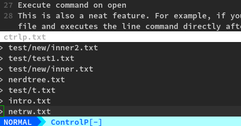
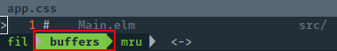
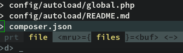
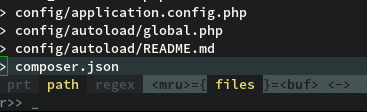
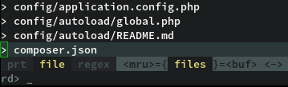

In this article we will discover one of the greatest and most widely used plugins in the vim world: CtrlP. It covers a similar area like NERDTree, because it helps you to find and open files very quickly. The magic behind this plugin is it’s fuzzy search engine. You can type in any region of a file path and the fuzzy search matches it to possible files and directory parts. The more matches there are, the higher it is ranked in the results. This means, that you don’t need to type in the beginning of a file path, but it can be any arbitrary part of the path. Of course you want to type in those parts that make a file unique to match it as fast as possible. With some practice it is a highly efficient way of navigate to files. Of course NERDTree and other tree views have their right to exist, but CtrlP is far more useful in most situations. In my humble opinion the big hype around this feature started with Textmate. It shipped this feature right with the editor itself. There was no need to install additional stuff to get the fuzzy search. In Textmate the shortcut for this feature was Ctrl-P. So this is why the corresponding vim plugin has the name CtrlP. But there is no official statements in the docs about it. In the process many other editors adopted this feature in form of a built-in feature (atom) or in form of a plugin (emacs[helm]). Most search requests still give you kien’s CtrlP GitHub Repository. Sad news is he isn’t actively maintaining it anymore. Good news is there is an active fork where you should download it from. After installing CtrlP, you should be able to call it with :CtrlP. A new horizontal split view should have opened at the bottom now.

If you type in some letters the result list should get modified. Also the parts of the file paths are highlighted, which match your typed in string. If you press
let g:ctrlp_map = '<C-p>'
let g:ctrlp_cmd = 'CtrlP'
What a surprise! We mapped CtrlP to <C-p>. Now you should be able to open CtrlP much faster. Maybe you recognized it during the first test already: the CtrlP split isn’t modal. If you try to go into normal mode, to navigate through the results, the CtrlP view closes immediately. But this doesn’t mean, that you need to blow the dust from your arrow keys. You can still navigate up and down with j and k by holding down Ctrl at the same time. You are also not bound to to the enter key, when opening files, even though this is the fastest way to open a file in the current buffer. If you try to open a file with <C-o> you have the chance to choose how you want to open it. You can choose between [t]ab, [h]orizontal, [v]ertical and [r]eplace. The first letter stands for the key, which needs to be pressed to apply the command. Replace doesn’t make much sense in my opinion, because pressing Enter(<CR>) is much faster. Of course there are shortcuts for the other kinds of opening as well. <C-t> opens the file in a new tab, <C-v> opens it in a vertical split and <C-x> does the job in a horizontal split.
Modes
In the previous chapter we learned about the basic navigation features, but there is much more to explore. If we open CtrlP we see the whole path for each file. This is the filepath mode. In addition to this mode there are three other ones. Let’s call them: major modes. There is a buffer mode, which shows a list of all open buffers of our current Vim session. The third mode is called MRU(most recently used) files. The name says it all. You are able to cycle through these modes by pressing <C-f> (forward) or <C-b> (backward).

The highlighted mode is always the active mode, as you can see in the image. In this case we are in the buffer mode. If you cycle back with <C-b> you would access the file mode and CtrlP would look like this

As you can see now, files is the highlighted mode. On the right is the buffer mode, in which we were in before. You can access it again by pressing <C-f>. So you can imagine the modes as a merry-go-round. The mode on the right is always accessed by cycling forward and the mode on the left of the current mode is accessed by cycling back. Thanks to thomass for putting this right in the comments section. I’m using the Buffer list very often, so I created an additional shortcut for it like this:
nnoremap <leader>b :CtrlPBuffer<CR>
The same thing can be done for MRU. The command is called :CtrlPMRUFiles. Next to these major modes, there are two additional minor modes which can be turned on or off for every one of these three major modes. These minor modes are also saved for the future. This means, if you close CtrlP and open it up later, those modes are still active. The first is the file only mode, which can be activated by pressing <C-d>. If this mode is active your typed in characters are only matched against the filename itself, not the rest of the path. I usually prefer the file only search in smaller projects and path in bigger ones. The reason is, that I can have redundant file names more often and this way I can distinguish better between them by typing in distinct parts of the path. To distinguish between file and path mode, there is a small d at the beginning of the CtrlP prompt, when in file mode.

The other minor mode is the regex mode, which is called by pressing <C-r>. It’s indicated by a small r at the beginning of the prompt.

I don’t really use it at all, but I’m sure it’s very helpful in some scenarios. Both of these modes are active until you turn them off by pressing the same key combination again. Additionally both of these minor modes can be active at the same time.

Execute command on open
This is also a neat feature. For example, if you got an error message in a program you are currently coding on. It’s telling you the file and line, where it occurred. Now you are able to type in the file name and write a : afterwards, followed by the line number and CtrlP opens the file and executes the line command afterwards. This is almost the only command I use, but you can give CtrlP every valid Vim command like :q, which opens the file and quits the buffer right afterwards. This doesn’t make sense at all, but it shows, that almost every command is possible.
Further Configuration
This is already a good chunk of stuff we get from CtrlP. But with some more configuration, we can get even more from it. Maybe you’ve noticed, there are also files listed up, that you don’t want to open ever. There are two ways to ignore those in a CtrlP listing. The first option is, you populate the Vim wildignore setting with the file endings you don’t want to open. These will also be ignored by Vim itself. Furthermore other plugins make use of this setting, too. So if you don’t want to open these filetypes at all in Vim, wildignore is the way to go for you. To add it your .vimrc, you type in the following:
set wildignore += *.swp,*.zip,*.exe,*/tmp/*
There you have a comma separated list with some *.ending definitions. The star says, that any arbitrary name can occur before a dot and the file ending. If you add a slash, this setting is also able to ignore complete directories. For example the last argument in the list ignores all kinds of tmp directories. The 2 stars say, that the tmp directory can lie anywhere in the file system and anything that lies in this tmp folder will be ignored as well. The second way is the CtrlP only way. To ignore specific file types in CtrlP only, you add the following to your .vimrc.
let g:ctrlp_custom_ignore = {
\ 'dir': '\\v\[\\/\]\\.(git|hg|svn)$',
\ 'file': '\\v\\.(exe|so|dll)$',
\ }
This example is taken from the official documentation. As you can see, this list is separated by directories and files. This snippet would ignore git, hg and svn directories in your project as well as files ending with exe, so and dll. We don’t go into more detail about what the regex notions mean, but if you want to to add or remove anything you can do so by adding them inside the brackets. Be sure to have the pipe between the arguments. One more important configuration is to tell CtrlP where to search for files. Add this to your .vimrc
let g:ctrlp_working_path_mode = 'ar'
This tells CtrlP where to start the search and where to search. There are some characters with a special meaning, which can be combined to set this configuration. The a tells that CtrlP should search in the current directory unless it’s not a sub directory of where vim was called. This normally occurs if you start vim from the console. The r flag tells CtrlP that it should iterate through parent directories for files until it finds a Version Control System Directory like the .git or .hg directory. This flag is very useful if you often work on projects, which were checked out from git or another VCS, because they act like a natural delimiter for your project files, which you want to find inside of CtrlP. There are also some more options, which I haven’t set. The c option says, that only files of the current directory are listed, w is the opposite of a. It starts the search from the cwd up to the sub directory of your current file, while a does it the other way around. An empty string or 0 would disable this feature completely. This is it. The post was getting longer as I thought initially. But I got one more neat snippet, which you can use to make CtrlP search even faster:
let g:ctrlp_use_caching = 0
if executable('ag')
set grepprg=ag\ --nogroup\ --nocolor
let g:ctrlp_user_command = 'ag %s -l --nocolor -g ""'
else
let g:ctrlp_user_command = [
\ '.git',
\ 'cd %s && git ls-files . -co --exclude-standard',
\ 'find %s -type f'
\ ]
let g:ctrlp_prompt_mappings = {
\ 'AcceptSelection("e")': ['<space>', '<cr>', '<2-LeftMouse>'],
\ }
endif
I found this on one of my favorite vim blog posts of all time. To use it, you need to have Ag (a.k.a the silver searcher) installed, which is a tool that can search for patterns in many files and directories. We will come to the Vim Plugin for Ag later. For now you can download Ag with your package manager and enjoy the advantages of this snippet. If you don’t want to install Ag right now, it’s also ok if you have git installed, which you already did, if you followed the first post of this series. Overall the Ag and Git search engines are much faster than the normal grep, which is used by CtrlP. For me it made a big difference in huge projects. This is by far no complete reference about CtrlP. If you need further information you can type the command :h CtrlP into Vim.